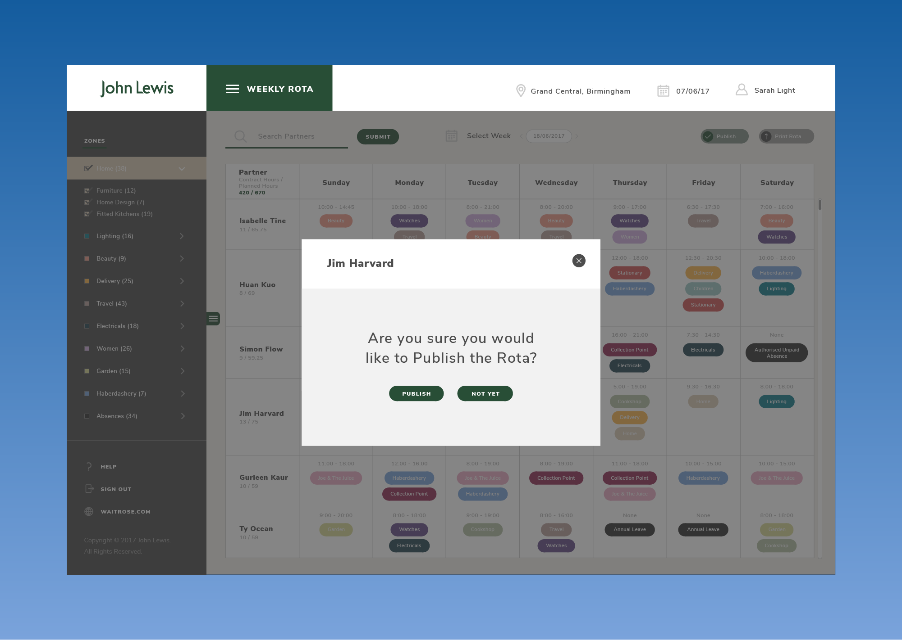
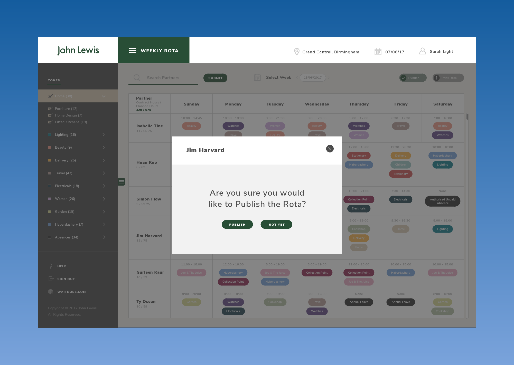
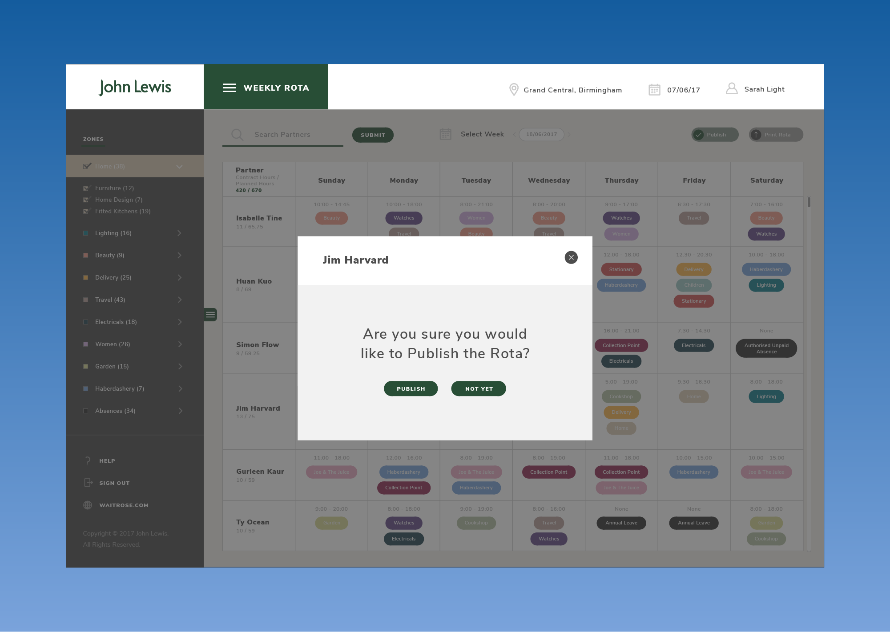

The featured interface elements and styles added into John Lewis’ weekly rota can be seen within the visual designs above.
With the system design being a success for Waitrose, a replica of the Workforce management system is also currently being produced for John Lewis’ branch partners.
Many of the basic functionalities and core design principles within Waitrose’s system were to be maintained, whilst staying true to John Lewis’ branding as well as including data obvious to the corporation.

The featured interface elements and styles added into John Lewis’ weekly rota can be seen within the visual designs above.